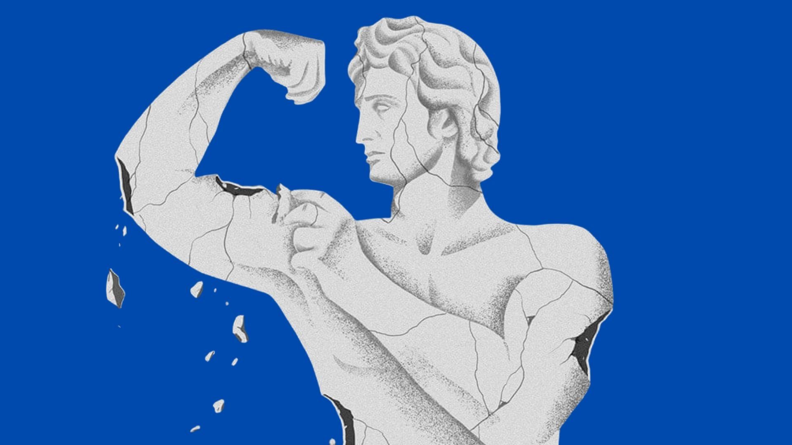
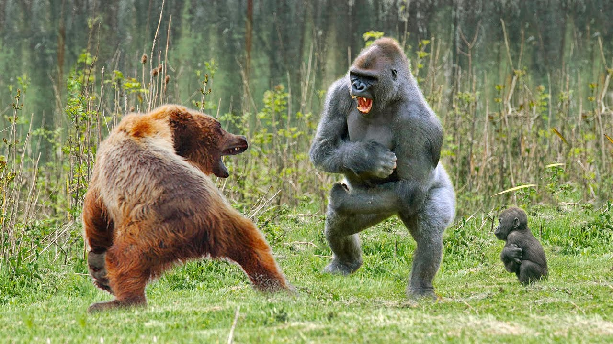
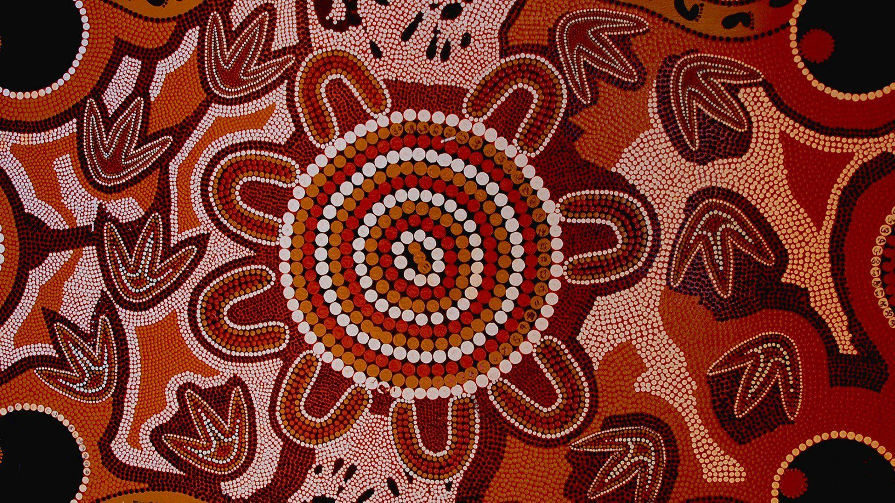
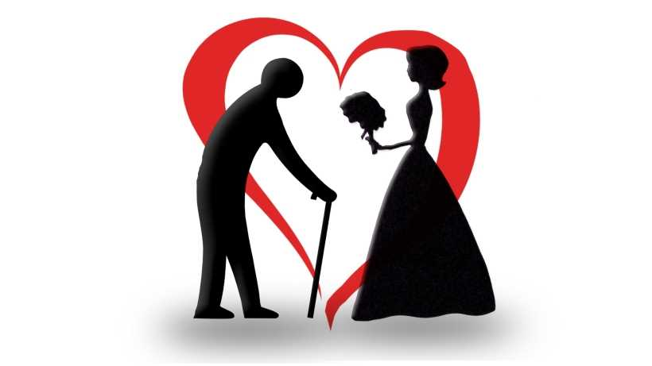
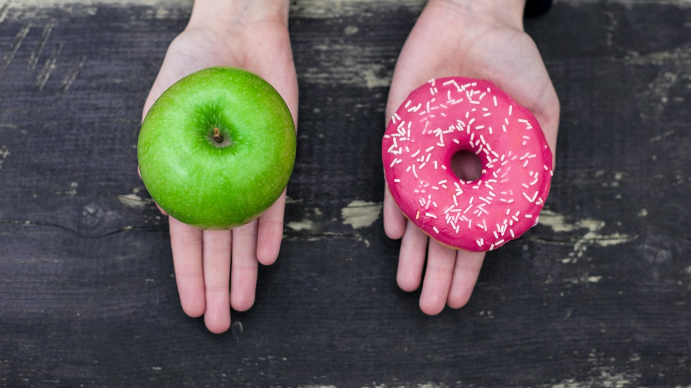

1:02:57
#004 | Should You Travel The World In 2023?

48:39
#006 | Has Male Mental Health Improved Over The Past Decade?

51:33
#008 | The Unimportant Yet Important Questions Episode

52:19
#009 | Is Australia Doing Enough To Improve The Lives Of Its Indigenous People?

43:12
#012 | Should Large Age Gaps In Relationships Be Frowned Upon?

58:29
#016 | Why Is Self-Control So Important For Modern Men?